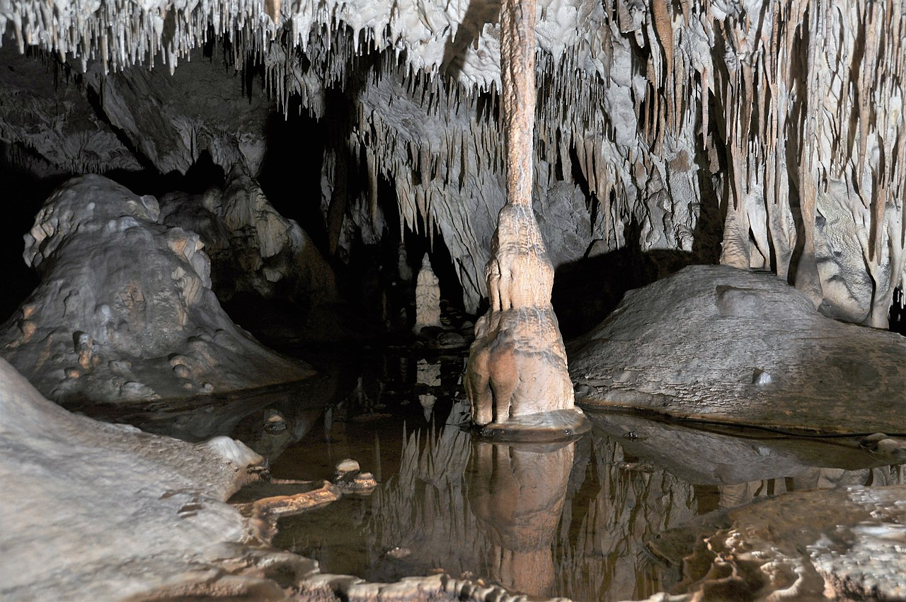

Jaskinia Raj znajduje się w obrębie wychodni wapieni dewońskich, budujących niewielkie wzniesienie Malik (też Molik, Malek) o wysokości około 270 m n.p.m. Wymienione wzgórze leży w Pasmie Bolechowickim, stanowiącym północne skrzydło synkliny gałęzicko-bolechowickiej. Jest to niewielka jaskinia o rozwinięciu poziomym, łączna długość jej korytarzy wynosi 240 metrów. Długość trasy wycieczkowej wynosi 180 m; zwiedzanie trwa około 45 minut. Zainstalowane jest oświetlenie elektryczne. Zwiedzanie odbywa się pod opieką przewodnika w grupach maksymalnie 15-osobowych. Jaskinię można zwiedzać od 15 stycznia do 15 listopada; w poniedziałki, Święta Wielkanocne, 31 sierpnia oraz 1 listopada jaskinia jest nieczynna.
| Państwo | Województwo | Położenie |
|---|---|---|
| Poslka | świętokrzyskie | Chęciny, powiat kielecki, wzgórze Malik, ulica Dobrzączka |